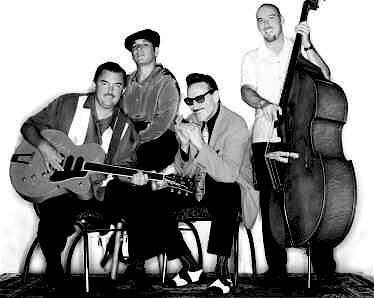

«Мощно, шокирующе, великолепно.... Мгновенно узнаваемая гитара Чарли Бейти и уникальные юмористически-лирические песни Рика Эстрина делают группу одним из самых удачных проектов, синтезирующих блюз, свинг, джаз, рокабилли, и обеспечивают ей все возрастающую популярность.»«Гитарист Чарли Бейти играет с
редкой интеллигентностью и вкусом, песни и вокал Рика Эстрина ярки и наполнены
настоящей блюзовой мудростью... К тому же он играет на губной гармошке так,
словно учился, сидя на коленях у самого Литтл Уолтера»
- Down Beat -
«Little Charlie And The Nightcats идут своим собственным блюзовым путем.
Задорное, прочувствованное, оджазованное... да просто клевое звучание,
сатирические, остроумные, умные тексты и абсолютно убойные гитарные и
гармошечные соло. Кажется, что интереснее уже просто не может быть»
- Blues Revue -
«Гитара Чарли Бейти... это
просто опасная вещь»
- Buddy Guy -
То, что блюз, в общем-то, не обязан всегда быть заунывным и меланхоличным, средний любитель знает. Или догадывается. Но то, что он может быть настолько жизнерадостным, остроумным и виртуозным, ощущаешь только после того, как послушаешь группу Little Charlie And The Nightcats.
В 50-е - 60-е годы прошлого века в Чикаго большой популярностью пользовалась группа Литтл Уолтера Джекобса Little Walter And The Night Cats. Уолтер бесподобно играл на губной гармошке, причем стал первым, кто электрифицировал этот инструмент. А в 1975 в Калифорнийском университете Беркли молодой парень по имени Чарли Бэйти (Charlie Baty), страстный почитатель Литтл Уолтера, собрал блюзовый бэнд. Сам он, как нетрудно догадаться, играл на гармошке и исполнял вместе с группой вещи своего кумира. Почему он назвал свой коллектив Little Charlie And The Nightcats, надеюсь, объяснять тоже не нужно.
А вот дальше все повернулось довольно неожиданным образом. Чарли познакомился с другим молодым энтузиастом блюза, Риком Эстриным (Rick Estrin), сочиняющим и поющим неплохие песенки, и решил пригласить его к себе в группу. Тот был не против, но... его основным инструментом (кроме вокала) была тоже губная гармоника. Причем он владел ею получше Чарли и уже успел поиграть вместе с Джонни Янгом и даже с самим Мадди Уотерсом.
Ничего не поделаешь, лидеру группы пришлось отложить гармошку и взять в руки гитару. Он никогда раньше не учился на ней играть - так, знал несколько аккордов и мог с грехом поплам аккомпанировать лидирующему инструменту. Зато он слушал очень много заезжих блюзовых бэндов - раньше, и в то время, когда собрал свою группу.
Ему было жаль своей гармошки, позже в интервью он шутил на тему своего прежнего инструмента: «Я любил играть на губной гармонике, и к тому же даже вполне приличная гармошка была значительно дешевле гитары. Сразу купить себе Фендер Стратокастер мало кому из молодых людей по карману...»
Когда Чарли взялся за гитару и попробовал для начала просто на слух скопировать кого-нибудь из знаменитостей, то оказалось, что у него есть прирожденное чувство инструмента. Ему даже не пришлось брать уроки у професиионалов - когда ресурсы игры на слух были исчерпаны, он накупил учебников и засел за них. И был получен почти невероятный результат - музыкант блестяще освоил большинство блюзовых, ритм-энд-блюзовых и даже джазовых гитарных стилей.... по самоучителям. Сегодня он считается одним из самых разносторонних и виртуозных блюзовых гитаристов в США. Кстати, может быть, вы думаете, что он учился в музыкальном колледже? Ничего подобного. Если бы не блюз, быть ему посейчас обычным учителем математики в школе.
Впрочем, ему приходилось работать, чтобы зарабатвать на жизнь, вплоть до подписания контракта с Alligator Records. Но об этом потом. А тогда, целых десять лет - с 1976 по 1986 - Little Charlie And The Nightcats были обычной местной клубной группой в Сакраменто. Чарли осваивал гитару, вникая во все новые и новые стили. Вот что он отвечал на вопрос одного из интервьюеров, хотел ли он быть таким, как Джими Хендрикс: «Нет, у меня все было подругому. Я не хотел походить на Хендрикса, я хотел быть как Бадди Гай. Мне кажется, и Хендрикс хотел того же... Одна из черт блюза, которую я любил и люблю больше всего, это его неисчерпаемость. Он не зависит от моды, и в нем главное - это традиции. Джаз тоже вышел из блюза - у них есть общие черты и сейчас. Я слушал очень много таких джазовых гитаристов, как Кенни Баррел, Лу Холтс, и пытался понять, из каких нот состоят аккорды, которые они играют. Часто это звучало очень похоже на блюз, но более сложный и красивый, чем традиционный. Чтобы разобраться в этом окончательно, я купил учебник Мики Бэйкера (Mickey Baker), стал его изучать, больше ходить на джазовые концерты.... Но вообще-то гитаристом, который действительно здорово повлиял на мой стиль, был Чарли Крисчиан, хотя я его слышал только в записи. Мои любимые джазмены - это Крисчиан и Чарли Паркер, и если попытаться определить мой стиль, то я играю в манере Чарли Крисчиана, но в контексте блюзового бэнда наподобие Литтл Уолтера».
Узнав такое, становится понятным, почему гитара Чарли Бейти одновременно так похожа и непохожа на традиционную блюзовую гитару. Просто в ней слишком много джазовых черт. В блюзе это бывает нечасто - виртозность и усложненность считаются излишними. В принципе, оно верно, но бывают и исключения. Одно из них - Литтл Чарли. Впрочем, он не злоупотреблял своей виртуозностью и никогда не уходил от блюзовых традиций. Что бы он ни добавлял к блюзу - джаз, буги-вуги, рокабилли, - все это органически перерабатывалось и не портило оригинал.
Маленький Чарли необычен еще и другой своей чертой. Он, формальный лидер группы, не является ни ее фронтменом, ни автором песен. Эти роли играет гармошечник и вокалист Рик Эстрин, с которым он вместе работает и дружит уже двадцать пять лет. Гитаристу почти всегда во всех интервью задают вопрос: как же так, не обидно ли ему иногда, что так получется? Он отвечает: «Я никогда не стремился стать вокалистом. Я пытался, конечно, порой выходить к микрофоу, но это всегда получалось плоско и невыразительно. Наверное, это оттого, что у меня нет и никогда не было стремления находиться в центре внимания. А Рик Эстрин идеально подходит на эту роль - он делает настоящее шоу. Правда, порой возникает путаница: зрители-новички частенько называют его Чарли, потому что он фронтмен».
По-настоящему, конечно, Little Charlie And The Nightcats - это Чарли и Рик. Барабанщик и басист время от времени меняются, но без одного из этих двух представить себе группу невозможно. Рик Эстрин - блестящий гармошечник и не менее блестящий сочинитель блюзов. Песни, которые пишет Рик, полны живого юмора, это всегда маленькие истории с фабулой, завязкой и развязкой, что тоже не вполне обычно для традиционного блюза. Его вещь My Next Ex-Wife с пятого по счету альбома Night Vision получила в 1993 г. премию им. У.Хенди как лучшее сочинение года, и еще несколько песен, которые он написал для Коко Тэйлор, Роберта Крэя и Джона Хэммонда, были вместе с их альбомами номинированы на Грэмми.
Но все это случилось уже после 1986 года. А тогда они крепко призадумались над тем, как им все-таки зарабатывать на жизнь своей музыкой. Группа сделала демо-записи, и Чарли разослал их по семи различным лейблам. Через несколько месяцев он получил ответ с приглашением от фирмы Blind Pig. Музыканты уже почти подписали контракт, когда им позвонил президент Alligator Records Брюс Иглауэр и сказал: «Подождите немного. Я специально прилечу, послушаю вас, и тогда поговорим». Такой стиль сразу понравился Чарли, а когда он пообщался с Брюсом, который остановился у него дома, то понял, что хочет иметь дело только с «Аллигатором».
В 1987 году вышел первый альбом Little Charlie And The Nightcats - All The Way Crazy, и начались бесконечные турне и концерты. «Аллигатор» как независимый и не очень крупный лейбл работает именнно таким образом - раскручивает своих артистов и их альбомы, организуя множество гастрольных поездок по США и за рубежом. С того времени группа выпустила на «Аллигаторе» уже девять альбомов, последний - That's Big - в 2002 году. Чарли даже жаловался: «Когда мы только подписали контракт, мне казалось, что на нас оказывается некоторое давление - мы должны были выпускать альбом за альбомом - каждый год-полтора. Так оно вначале и было, но потом мы стали записываться реже. Я думаю, один альбом в два-три года - это то, что нужно».
Но жаловался он, конечно, не всерьез. Он ведь достиг того, о чем мечтал, - зарабатывать на жизнь, играя блюз. А это удел далеко не всех блюзменов, даже более-менее известных. Несмотря на изрядное число изданных дисков, Little Charlie And The Nightcats группа больше концертная, чем студийная. Они даже альбомы свои пишут фактически в режиме концерта, вживую, почти без дублей. Чарли Бейти категорически против многократного перезаписывания и редактирования готового материала: «Думаю, что наши альбомы становятся все лучше. Мы с Риком теперь сами продюсируем свои работы, потому что знаем, как это нужно делать с нашей музыкаой. Когда мы приходим в студию, и все идет своим чередом, и мы играем так, как настроены делать это в данный момент, то лучший вариант на записи всегда первый. Даже, если где-то есть небольшая ошибка, мы предпочитаем оставить все как есть. Это называется честным отношением к музыке».
В наше время честное отношение к музыке можно встретить только в непопсовых жанрах, таких, как академическая классика, джаз, блюз, рок.... Во всяком случае, душу и сердце настоящего меломана не могут не согреть такие слова необычного лидера группы, который не хочет быть фронтменом: «У меня никогда не было цели делать хиты. Я хочу просто играть музыку, которую я люблю, и мне кажется, что в этом смысле мне близки джазовые музыканты - они увлечены прежде всего своим творчеством и красивой музыкой. Для меня главное - сама музыка, а не какое-то особенное звучание или всякие фокусы с MIDI, которые делают в студии или где-то еще. Я считаю, что лучше всего просто взять в руки инструменты и играть вживую без всяких там специальных штучек».
Ну что ж, кто умеет, тот играет. Ночные коты Маленького Чарли доказали, что они-то умеют. Ищите их альбомы, слушайте. А будете в Америке, заезжайте в Сакраменто - может быть, вам повезет, и вы как раз попадете на их концерт. Blues Lives!!!
Евгений Долгих
Перепечатано из журнала Jazz-квадрат
фото Эрика
Логана предоставлено Alligator Records.
All The Ways Crazy - 1987 (AL4753)
Disturbing The Peace - 1988 (AL4761)
The Big Break - 1989 (AL4776)
Captured Live - 1991 (AL4794)
Night Vision - 1992 (AL4812)
Straight Up! - 1995 (AL4829)
Deluxe Edition - 1997 (AL5603) - сборник
Shadow Of The Blues - 1998 (AL4862)
That's Big - 2002 (AL4883)
Интервью с Чарли Бейти для сайта http://guitarsrule.com/ в переводе Арсена Шомахова.